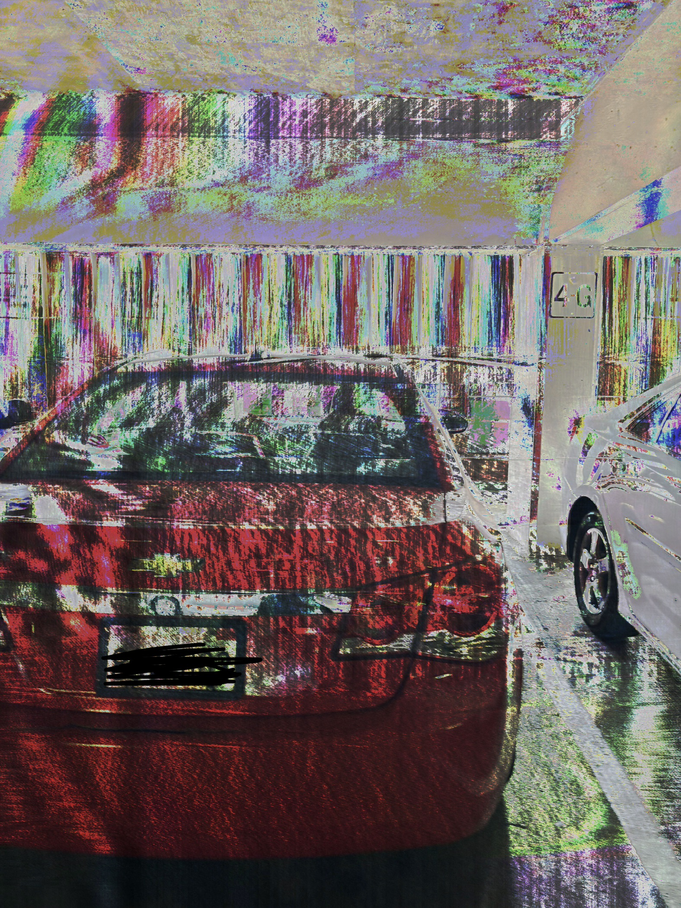

Glitch Art 2026
This image was created in September 3, 2026. The series of glitches here is meant to represent the beginning of my journey from San Jose State, to the 880 freeway, ending with my car parked home. The glitches are meant to symbolize the emotion of cloudy and doziness after a long exhuasting car ride finally arriving at home. As many of us who commute get out of school drained, a long awaited traffic awaits for us to reach at some point during our journey through the freeway. As we arrive home, we become even more tired, thus the final image demonstrates the distortion becoming more intense.